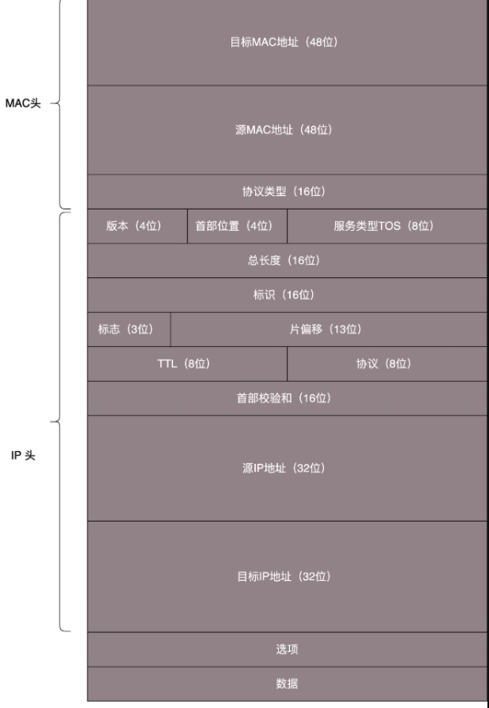
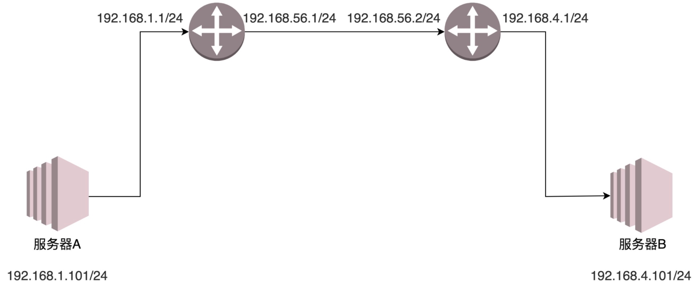

此时公司里已经使用交换机组成了局域网，现在有连接外网的需求，有两种办法：
双网卡
局域网中一台电脑再插入一张新网卡，这样这台电脑就有2张网卡，一个插在局域网上，一个插在外网上。
连接外网的网卡要按照外网的要求设置IP地址。
这种情况如果局域网任何一台电脑需要上网，就必须同时开着双网卡这台电脑。
路由器
路由器会有内网网口和外网网口，内网网口连接局域网，外网网口连接外网。
本质与双网卡电脑功能一样。
同样有人想要上网，就必须开着路由器。
当双网卡电脑设置正确可以正常上网之后，其他电脑也要正常上网就需要配置各自的网卡。
DHCP 是可以默认配置的。在进行网卡配置的时候，除了 IP 地址，还需要配置一个Gateway 的东西，这个就是网关。
MAC头和IP头
一旦配置了 IP 地址和网关，往往就能够指定目标地址进行访问了。由于在跨网关访问的时候，牵扯到 MAC 地址和 IP 地址的变化，所以这里要描述一下 MAC 头和 IP 头的细节。

在任何一台机器上，当要访问另一个 IP 地址的时候，都会先判断，这个目标 IP 地址，和当前机器的 IP 地址，是否在同一个网段。
如何判断同一网段
将IP与子网掩码按位与，可获得网络号。 CIDR确定网络号长度，如192.168.0.1/24，24表示网络号是24位，意味着子网掩码应该为255.255.255.0 即前三个字节全1，最后字节全0。与IP做与操作，就可以去掉主机号，得到网络号。
同一个网段
如果是同一个网段，那就没网关什么事情，直接将源地址和目标地址放入 IP 头中，然后通过 ARP 获得 MAC 地址，将源 MAC 和目的 MAC 放入 MAC 头中，发出去就可以了。
不是同一个网段
如果不是同一网段，例如，要访问你们校园网里面的 BBS，该怎么办？这就需要发往默认网关 Gateway。Gateway 的地址一定是和源 IP 地址是一个网段的。往往不是第一个，就是第二个。例如 192.168.1.0/24 这个网段，Gateway 往往会是 192.168.1.1/24 或者 192.168.1.2/24。
如何发往默认网关
这个过程就和发往同一个网段的其他机器是一样的：将源地址和目标 IP 地址放入 IP 头中，通过 ARP 获得网关的 MAC 地址，将源 MAC 和网关的 MAC 放入 MAC 头中，发送出去。网关所在的端口，例如 192.168.1.1/24 将网络包收进来，然后接下来怎么做，就完全看网关的了。
此时网关收到的数据包，MAC地址是自己的，但IP地址不是自己的，所以网关再把这个数据包从其他端口转发出去
网关往往是一个路由器，是一个三层转发的设备。就是把 MAC 头和 IP 头都取下来，然后根据里面的内容，看看接下来把包往哪里转发的设备。
在上面双网卡的例子中，双网卡的电脑就是局域网里的网关。
路由器
很多情况下，人们把网关就叫做路由器。其实不完全准确，而另一种比喻更加恰当：
路由器是一台设备，它有五个网口或者网卡，相当于有五只手，分别连着五个局域网。每只手的 IP 地址都和局域网的 IP 地址相同的网段，每只手都是它握住的那个局域网的网关。
任何一个想发往其他局域网的包，都会到达其中一只手，被拿进来，拿下 MAC 头和 IP 头，看看，根据自己的路由算法，选择另一只手，加上 IP 头和 MAC 头，然后扔出去。
静态路由
静态路由，其实就是在路由器上，配置一条一条规则。这些规则包括：
想访问 BBS 站（它肯定有个网段），从 2 号口出去，下一跳是 IP2；想访问教学视频站（它也有个自己的网段），从 3 号口出去，下一跳是 IP3，然后保存在路由器里。
每当要选择从哪只手抛出去的时候，就一条一条的匹配规则，找到符合的规则，就按规则中设置的那样，从某个口抛出去，找下一跳 IPX。
转发网关 和 NAT网关
MAC 地址是一个局域网内才有效的地址。因而，MAC 地址只要过网关，就必定会改变，因为已经换了局域网。两者主要的区别在于 IP 地址是否改变。不改变 IP 地址的网关，我们称为转发网关；改变 IP 地址的网关，我们称为NAT 网关。
转发网关 例子

服务器 A 要访问服务器 B。首先，服务器 A 会思考，192.168.4.101 和我不是一个网段的，因而需要先发给网关。
那网关是谁呢？已经静态配置好了，网关是 192.168.1.1。网关的 MAC 地址是多少呢？
发送 ARP 获取网关的 MAC 地址，然后发送包。包的内容是这样的：
源 MAC：服务器 A 的 MAC
目标 MAC：192.168.1.1 这个网口的 MAC
源 IP：192.168.1.101
目标 IP：192.168.4.101
包到达 192.168.1.1 这个网口，发现 MAC 一致，将包收进来，开始思考往哪里转发。
在路由器 A 中配置了静态路由之后，要想访问 192.168.4.0/24，要从 192.168.56.1 这个口出去，下一跳为 192.168.56.2。于是，路由器 A 思考的时候，匹配上了这条路由，要从 192.168.56.1 这个口发出去，发给 192.168.56.2，那 192.168.56.2 的 MAC 地址是多少呢？
路由器 A 发送 ARP 获取 192.168.56.2 的 MAC 地址，然后发送包。包的内容是这样的：
源 MAC：192.168.56.1 的 MAC 地址
目标 MAC：192.168.56.2 的 MAC 地址
源 IP：192.168.1.101
目标 IP：192.168.4.101
包到达 192.168.56.2 这个网口，发现 MAC 一致，将包收进来，开始思考往哪里转发。
在路由器 B 中配置了静态路由，要想访问 192.168.4.0/24，要从 192.168.4.1 这个口出去，没有下一跳了。因为我右手这个网卡，就是这个网段的，我是最后一跳了。
于是，路由器 B 思考的时候，匹配上了这条路由，要从 192.168.4.1 这个口发出去，发给 192.168.4.101。那 192.168.4.101 的 MAC 地址是多少呢？
路由器 B 发送 ARP 获取 192.168.4.101 的 MAC 地址，然后发送包。包的内容是这样的：
源 MAC：192.168.4.1 的 MAC 地址
目标 MAC：192.168.4.101 的 MAC 地址
源 IP：192.168.1.101
目标 IP：192.168.4.101
包到达服务器 B，MAC 地址匹配，将包收进来。
通过这个过程可以看出，每到一个新的局域网，MAC 都是要变的，但是 IP 地址都不变。在 IP 头里面，不会保存任何网关的 IP 地址。所谓的下一跳是，某个 IP 要将这个 IP 地址转换为 MAC 放入 MAC 头。
在整个过程中，IP 头里面的地址都是不变的。IP 地址在三个局域网都可见，在三个局域网之间的网段都不会冲突。在三个网段之间传输包，IP 头不改变。
NAT网关 例子
当局域网之间各自定义了各自的网段，并且因而导致了IP冲突，两个局域网都用了同一个网段。
局域网A又一个192.168.1.101，局域网B也有一个192.168.1.101，如果他俩通讯看上去就像自己访问自己。
这种情况发送网络包中的IP地址就会被更改，不能使用最原始的源IP地址了。
首先，目标服务器 B 要在公网中有一个IP地址，192.168.56.2。在网关 B 上，我们记下来。
公网IP 192.168.56.2，内网IP 192.168.1.101，凡是访问192.168.56.2，都转成 192.168.1.101。
于是，源服务器 A 要访问目标服务器 B，要指定的目标地址为 192.168.56.2。这是它的公网IP，192.168.56.2 和源服务器 A 不是一个网段的，因而需要发给网关，网关是谁？已经静态配置好了，网关是 192.168.1.1，网关的 MAC 地址是多少？发送 ARP 获取网关的 MAC 地址，然后发送包。包的内容是这样的：
源 MAC：服务器 A 的 MAC
目标 MAC：192.168.1.1 这个网口的 MAC
源 IP：192.168.1.101
目标 IP：192.168.56.2
包到达 192.168.1.1 这个网口，发现 MAC 一致，将包收进来，开始思考往哪里转发。
在路由器 A 中配置了静态路由：要想访问 192.168.56.2/24，要从 192.168.56.1 这个口出去，没有下一跳了，因为我右手这个网卡，就是这个网段的，我是最后一跳了。
于是，路由器 A 匹配上了这条路由，要从 192.168.56.1 这个口发出去，发给 192.168.56.2。那 192.168.56.2 的 MAC 地址是多少呢？路由器 A 发送 ARP 获取 192.168.56.2 的 MAC 地址。
当网络包发送到中间的局域网的时候，服务器 A 也需要有个公网IP，因而在公网上，源 IP 地址也不能用 192.168.1.101，需要改成 192.168.56.1。发送包的内容是这样的：
源 MAC：192.168.56.1 的 MAC 地址
目标 MAC：192.168.56.2 的 MAC 地址
源 IP：192.168.56.1
目标 IP：192.168.56.2
包到达 192.168.56.2 这个网口，发现 MAC 一致，将包收进来，开始思考往哪里转发。
路由器 B 是一个 NAT 网关，它上面配置了，要访问公网IP 192.168.56.2 对内网IP 192.168.1.101，于是改为访问 192.168.1.101。
在路由器 B 中配置了静态路由：
要想访问 192.168.1.0/24，要从 192.168.1.1 这个口出去，没有下一跳了，因为我右手这个网卡，就是这个网段的，我是最后一跳了。
于是，路由器 B 思考的时候，匹配上了这条路由，要从 192.168.1.1 这个口发出去，发给 192.168.1.101。那 192.168.1.101 的 MAC 地址是多少呢？
路由器 B 发送 ARP 获取 192.168.1.101 的 MAC 地址，然后发送包。
内容是这样的：
源 MAC：192.168.1.1 的 MAC 地址
目标 MAC：192.168.1.101 的 MAC 地址
源 IP：192.168.56.1
目标 IP：192.168.1.101
包到达服务器 B，MAC 地址匹配，将包收进来。
从服务器 B 接收的包可以看出，源 IP 为服务器 A 的公网IP，因而发送返回包的时候，也发给这个公网IP，由路由器 A 做 NAT，转换为内网IP。
从这个过程可以看出，IP 地址也会变。这个过程用英文说就是 Network Address Translation，简称 NAT。
家用网络经常会经过多次NAT。
本文由 PCX
创作，采用 知识共享署名4.0 国际许可协议进行许可
本站文章除注明转载/出处外，均为本站原创或翻译，转载前请务必署名
最后编辑时间为: 2021-03-26T00:07:35+08:00